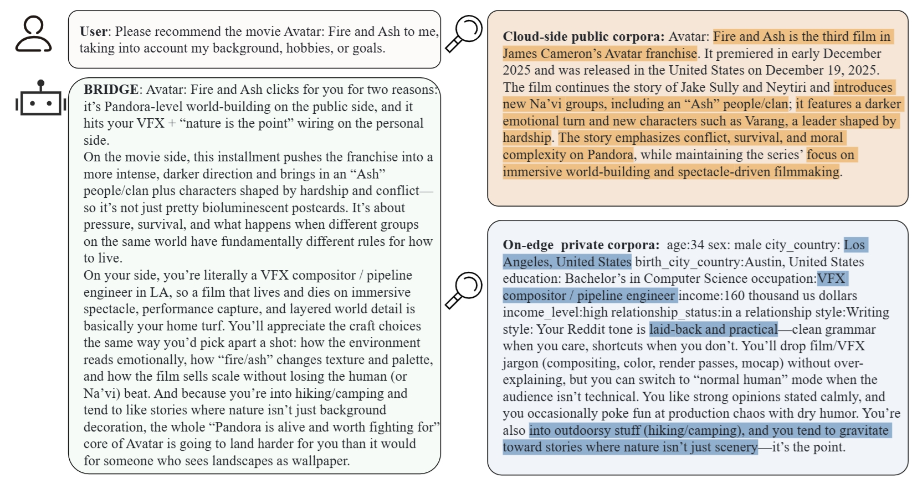
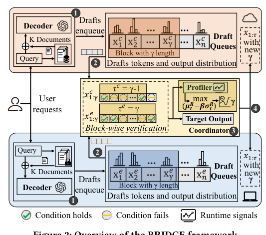
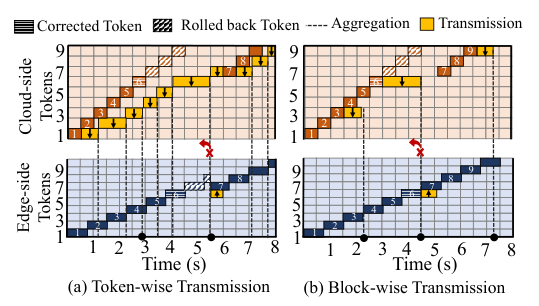
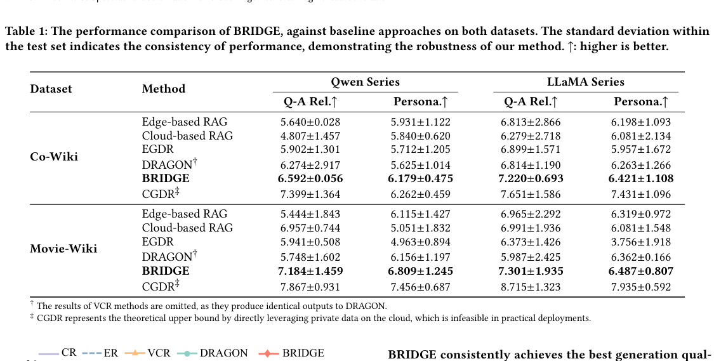
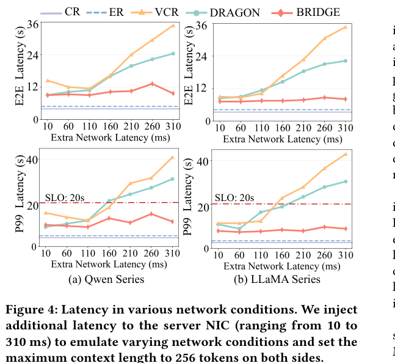
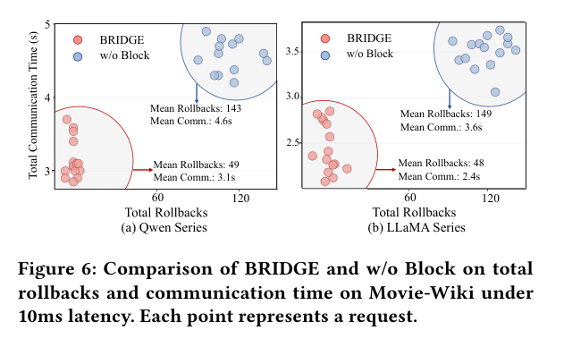

Challenge 1
Public knowledge and private user context live in different places, but practical RAG tasks need both.
SIGKDD 2026
BRIDGE jointly uses public cloud knowledge and private edge knowledge for retrieval-augmented generation, while avoiding sensitive data transfer and reducing coordination stalls with block-wise speculative verification.
Tianjin University • * Equal contribution • Corresponding author: Xiaofei Wang
Overview
Real deployments often split knowledge across two tiers: cloud-side corpora carry broad and fresh public information, while edge-side storage holds private user context. Existing approaches either sacrifice personalization, expose sensitive data, or pay heavy synchronization and rollback cost during collaborative decoding.
BRIDGE addresses this by letting both sides retrieve and draft in parallel, then coordinating them through block-wise transmission and verification. The result is stronger relevance and personalization, lower latency, and better service stability under varying networks.
Public knowledge and private user context live in different places, but practical RAG tasks need both.
Token-level aggregation causes frequent cross-side synchronization and RTT-sensitive stalls.
Speculative rejection wastes KV states and compute through rollback-heavy recomputation.
Jointly uses cloud and edge retrieval without uploading private edge data or rebuilding KV states from raw text.
Amortizes communication overhead and commits the longest acceptable prefix in one shot.
Balances communication savings and verification cost under changing runtime and network conditions.
Actual Use Case
In our real serving scenario, the cloud side contributes fresh public facts about the queried movie, while the edge side contributes the user's background, profession, hobbies, and writing style. BRIDGE fuses both sides into one explanation that is more personal than cloud-only RAG and more informed than edge-only retrieval.

Method
Cloud and edge decoders retrieve from their own corpora, draft tokens independently, buffer them into blocks, and send the blocks to an event-driven coordinator. The coordinator verifies both drafts jointly against the aggregated target distribution and broadcasts the committed prefix back to both sides.


BRIDGE batches draft tokens and auxiliary statistics into short blocks, reducing RTT-dominated communication overhead.
Instead of stopping at the first rejected token, BRIDGE verifies the whole draft block and commits the longest acceptable prefix.
Runtime profiling chooses a safe and efficient block length, preserving low latency while improving throughput.
Results
Across Co-Wiki and Movie-Wiki, BRIDGE achieves the strongest Q-A relevance and personalization among practical baselines in both Qwen and LLaMA series.
On Movie-Wiki, BRIDGE reduces average latency by 50.3% versus VCR and 37.0% versus DRAGON on Qwen, while lowering P99 latency by up to 79.1%.
Beyond mean latency gains, BRIDGE keeps tail latency under control, making collaborative RAG more practical under fluctuating network conditions.



Paper
Retrieval-augmented generation improves factuality by conditioning LLMs on retrieved evidence, but real deployments often split knowledge across tiers: cloud-based RAG can exploit large public corpora, whereas edge-based RAG is the natural place to access private, user-specific stores. BRIDGE asks how to jointly use both without transferring sensitive edge data or paying prohibitive coordination cost.
The framework introduces block-wise speculative coordination for inter-database distributed generation, including block-wise transmission, block-wise verification, and an adaptive block-length strategy. Across public-private RAG benchmarks, model families, and network regimes, BRIDGE improves relevance and personalization while reducing end-to-end latency by up to 79.1%.
Citation
@inproceedings{li2026bridge,
title = {BRIDGE: Block-Wise Speculative Coordination for Cloud-Edge Retrieval-Augmented Generation},
author = {Li, Yuting and Huang, Shaoyuan and Liu, Xiangqi and Zhao, Yunfeng and Wang, Xiaofei},
booktitle = {Proceedings of the ACM SIGKDD Conference on Knowledge Discovery and Data Mining},
year = {2026}
}